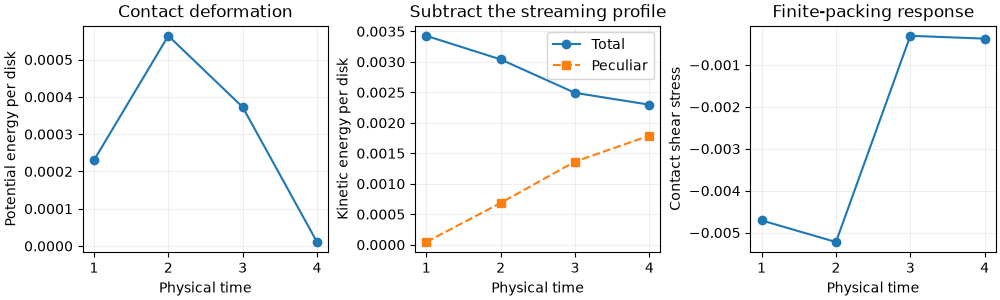
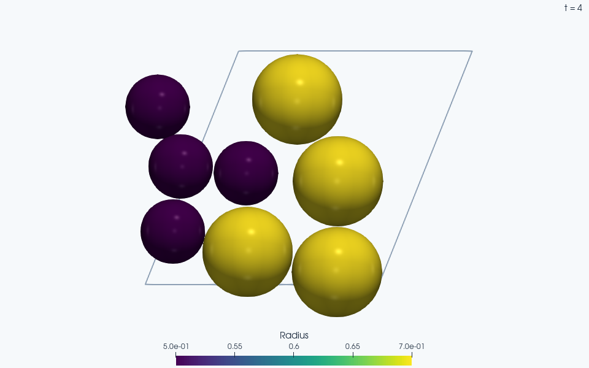

Note
Go to the end to download the full example code.
Constant-rate shear below a finite packing’s jamming threshold#
Find a small bidisperse packing’s jamming threshold, expand it by 0.02 in
packing fraction, and impose Lees–Edwards shear. The initial velocity profile
is v_x = gamma_dot * (y - mean(y)). A pre-step callback advances the image
strain consistently with time; Lees–Edwards boundaries do not set strain
on their own.
The eight disks and 400 integration steps keep this demonstration short.
Their jamming fraction is seed- and size-dependent, not an estimate of the
bulk bidisperse limit. Length, unit mass, and unit spring stiffness define
reduced units. With dt=0.01 the contact timescale is resolved, but a
production flow curve needs timestep, system-size, and run-length studies.
No thermostat or dashpot removes shear work. We print contact shear stress and both total and peculiar kinetic energy. The latter subtracts the imposed streaming profile; total kinetic energy includes that profile. Neither a steady state nor a monotonic heating curve is guaranteed in this short run.
import jax
import jax.numpy as jnp
from dataclasses import replace
import numpy as np
import jaxdem as jdem
from jaxdem.utils.contacts import compute_contact_stress_tensor
from jaxdem.utils.packing_utils import scale_to_packing_fraction
from jaxdem.utils.thermal import compute_potential_energy
jax.config.update("jax_enable_x64", True)
Shear kinematics and the quantities being measured#
With flow along x and its gradient along y, the imposed strain is \(\gamma(t)=\dot\gamma t\). Images across a y boundary have the offsets
Here n_y is an integer image count. Domain displacement and relative-
velocity routines account for those offsets; directly subtracting wrapped
coordinates would give incorrect separations and contact velocities.
The callback prescribes gamma, while gamma_dot supplies the image
velocity. Keeping both consistent is part of defining the loading protocol.
For a reference height \(y_0=\langle y\rangle\), separate the streaming profile from the instantaneous velocity:
K_pec measures fluctuations about this specified profile, which need not
equal the measured local mean flow in a short, nonuniform system. The raw
kinetic energy includes streaming; converting either quantity to temperature
requires the appropriate degrees of freedom and a justified flow subtraction.
The reported contact stress is the compression-positive virial
r_ij points from j’s minimum image to i and F_ij acts on i. Each
unordered pair appears once. Kinetic stress is not included in this output.
The four printed points reach strain 0.4; a constitutive flow curve would
additionally need equilibration and time-averaged observables.
The relaxed upper energy bound defines this finite system’s threshold. Moderate tolerances suffice for this dynamics lesson; convergence is checked.
N = 8
phi = 0.65
rad = jnp.concatenate([jnp.full(N // 2, 0.5), jnp.full(N // 2, 0.7)])
volume = jnp.pi * rad**2
L = jnp.sqrt(jnp.sum(volume) / phi)
state = jdem.State.create(
pos=jax.random.uniform(jax.random.key(0), (N, 2), minval=0.0, maxval=L),
rad=rad,
mass=jnp.ones(N),
volume=volume,
)
system = jdem.System.create(
state=state,
dt=0.01,
rotation_integrator_type=None,
minimizer=jdem.minimizers.fire,
minimizer_kw={"dt": 0.05},
domain_type="periodic",
domain_kw={"box_size": jnp.full(2, L)},
mat_table=jdem.MaterialTable.from_materials(
[jdem.Material.create("elastic", young=1.0, poisson=0.3, density=1.0)]
),
)
jam = jdem.utils.jamming.bisection_jam(
state,
system,
pe_tol=1e-8,
pe_band_factor=4.0,
packing_fraction_increment=0.04,
packing_fraction_tolerance=1e-4,
n_jamming_steps=80,
verbose=False,
minimizer_kwargs={"max_steps": 5_000, "force_tol": 1e-7, "torque_tol": 1e-7},
)
if not bool(jam.converged):
raise RuntimeError(f"Jamming did not converge: {jam.info}")
state, system = jam.jammed_state, jam.jammed_system
flow_phi = float(jam.packing_fraction) - 0.02
state, system = scale_to_packing_fraction(state, system, flow_phi)
print(
f"Finite-system phi_J = {float(jam.packing_fraction):.6f}; "
f"flow phi = {flow_phi:.6f}"
)
Finite-system phi_J = 0.733047; flow phi = 0.713047
The callback sees the tentative end time of each physical step.
def advance_shear(state, system):
domain = replace(system.domain, gamma=system.domain.gamma_dot * system.time)
return state, replace(system, domain=domain)
shear_rate = 0.1
system = replace(
system,
domain=jdem.Domain.create(
"leesedwards",
dim=2,
box_size=system.domain.box_size,
anchor=system.domain.anchor,
gamma_dot=shear_rate,
),
user_pre_step_actions=advance_shear,
)
y = state.pos_c[:, 1]
state = replace(
state, vel=jnp.zeros_like(state.vel).at[:, 0].set(shear_rate * (y - jnp.mean(y)))
)
state, system = system.initialize(state, system)
Positive diagonal contact stress means compression. sigma_xy below is only the contact virial contribution; kinetic stress is a separate contribution.
print("time gamma PE/N total_KE/N peculiar_KE/N contact_sigma_xy")
measurements = []
scene_states, scene_systems = [], []
for _ in range(4):
state, system = system.step(state, system, n=100)
system.check_overflow()
state, system, stress = compute_contact_stress_tensor(state, system)
pe = compute_potential_energy(state, system) / N
ke = 0.5 * jnp.sum(state.mass[:, None] * state.vel**2) / N
streaming = (
jnp.zeros_like(state.vel)
.at[:, 0]
.set(shear_rate * (state.pos_c[:, 1] - jnp.mean(state.pos_c[:, 1])))
)
peculiar_ke = 0.5 * jnp.sum(state.mass[:, None] * (state.vel - streaming) ** 2) / N
measurements.append(
[
float(system.time),
float(pe),
float(ke),
float(peculiar_ke),
float(stress[0, 1]),
]
)
scene_states.append(state)
scene_systems.append(system)
print(
f"{float(system.time):.2f} {float(system.domain.gamma):.3f} "
f"{float(pe):.3e} {float(ke):.3e} {float(peculiar_ke):.3e} "
f"{float(stress[0, 1]):.3e}"
)
time gamma PE/N total_KE/N peculiar_KE/N contact_sigma_xy
1.00 0.100 2.299e-04 3.427e-03 4.425e-05 -4.708e-03
2.00 0.200 5.639e-04 3.040e-03 6.846e-04 -5.223e-03
3.00 0.300 3.727e-04 2.492e-03 1.363e-03 -3.054e-04
4.00 0.400 1.064e-05 2.297e-03 1.789e-03 -3.727e-04
Compare contact stress with the energy in peculiar motion#
These are the four measured endpoints above. Subtracting the prescribed streaming profile isolates peculiar kinetic energy; it does not remove the stress fluctuations of a small packing or establish a steady flow.
import matplotlib.pyplot as plt
measured = np.asarray(measurements)
fig, axes = plt.subplots(1, 3, figsize=(10, 3), layout="constrained")
axes[0].plot(measured[:, 0], measured[:, 1], "o-")
axes[0].set(ylabel="Potential energy per disk", title="Contact deformation")
axes[1].plot(measured[:, 0], measured[:, 2], "o-", label="Total")
axes[1].plot(measured[:, 0], measured[:, 3], "s--", label="Peculiar")
axes[1].set(ylabel="Kinetic energy per disk", title="Subtract the streaming profile")
axes[1].legend()
axes[2].plot(measured[:, 0], measured[:, 4], "o-")
axes[2].set(ylabel="Contact shear stress", title="Finite-packing response")
for axis in axes:
axis.set_xlabel("Physical time")
axis.grid(alpha=0.2)
plt.show()


ParaView rendering of this run’s VTKWriter output.
Total running time of the script: (0 minutes 8.869 seconds)